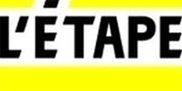

Trade Mark Journal No.2026/007 13 February 2026
WO0000001837091 (41)
Office of origin: European Union Intellectual Property Office (EUIPO)
Date of International Registration:12 December 2024
Date of designation in the UK:
6 November 2025

The mark contains the colours black and yellow
- Class 41
- Education; training services; entertainment; sporting and cultural activities; organization and conducting of colloquiums, conferences, seminars and congresses; party planning [entertainment]; organization of competitions relating to education or entertainment; sports camp (entertainment) and sports development services; fitness sports club services; organization of shows, exhibitions for cultural, sporting or educational purposes; rental of sports equipment, of cinematographic films; provision of sports facilities; reservation of seats for sports competitions, provision of entertainment infrastructure, namely, VIP infrastructure inside and outside sports venues; electronic sports club [entertainment]; coaching [training]; organization of sporting events and competitions; organizing of electronic sports competitions; training services by means of simulators; radio, television entertainment; show and film production; provision of non-downloadable videos online; organizing and conducting of training workshops in the fields of sports and e-sports; amusement park services; personal trainer services [fitness training]; presentation of live performances; amusement arcade services for the practice of electronic sports; online video-game services; video game services for entertainment purposes; online game services; rental of video games; rental of video game apparatus; rental of video game consoles; rental of arcade video game machines; entertainment services by means of computer games and video games; providing interactive computer games online; providing computer games online; gambling services; operating lotteries and betting, gambling; online information services concerning computer games; electronic game services, including computer games provided online or via a global computer network; provision of information relating to sports events; publication of magazines and books; online editing of periodicals and books.
AMAURY SPORT ORGANISATION A S O
Representative: REGIMBEAU, 20 rue de Chazelles, F-75847 Paris Cedex 17, FRANCE